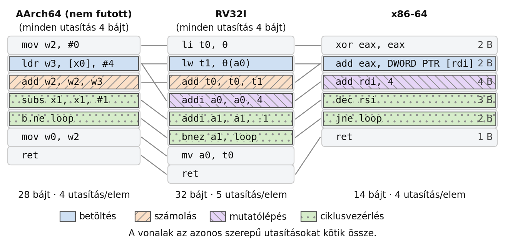
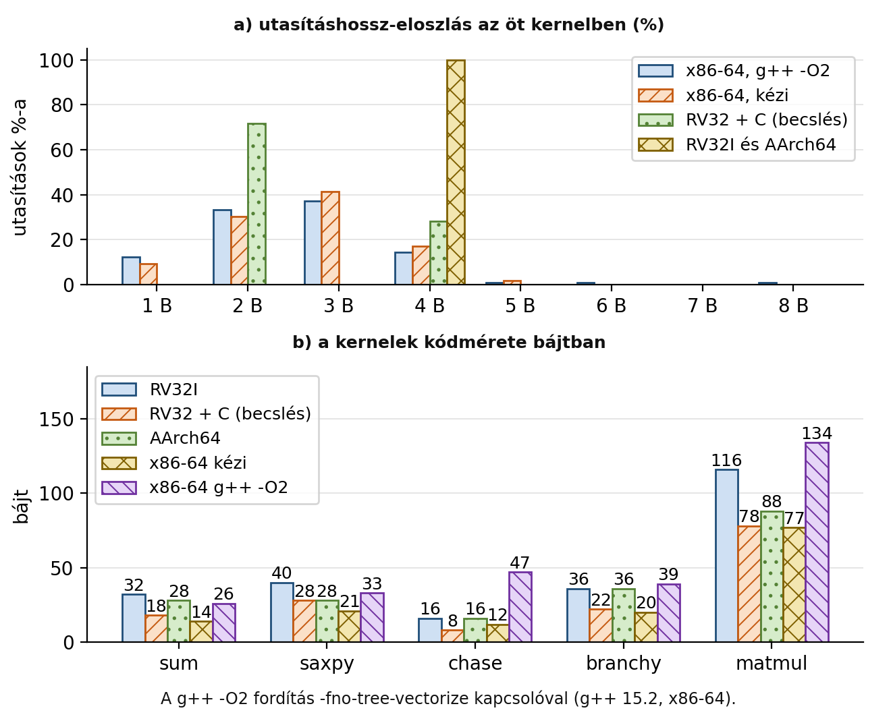

A sum kernel – egy egész tömb összegzése – RV32I-ben 8
utasítás és 32 bájt, AArch64-ben 7 utasítás és 28 bájt, x86-64-ben 6
utasítás, de csak 14 bájt. A ciklus egy tömbelemre RISC-V-n 5, a másik
kettőn 4 utasítást hajt végre. Melyik a „jobb” processzor? Ebből nem
derül ki. A vasegyenlet (Végrehajtási idő, CPI és a
vasegyenlet) szerint az idő az utasításszám, a CPI és a ciklusidő
szorzata, és a CPI nem az utasításkészlet, hanem a megvalósítás
tulajdonsága. Az ISA-k különbsége mégis valós: meghatározza, milyen
nehéz az utasításokat dekódolni, mennyi kód fér a cache-be, hány
regiszter áll a fordító rendelkezésére, és milyen sorrendben láthatják
egymás írásait a magok. Ebben az alfejezetben ezeket vetjük össze.

Olvasd az ábrát soronként, a középső RISC-V oszlopból indulva. Egy
RISC-V utasítás pontosan egy dolgot csinál. Az AArch64
ldr w3, [x0], #4 egyszerre tölt be és lépteti a mutatót
(két vonal indul belőle). Az x86-64
add eax, DWORD PTR [rdi] betölt és összead. Cserébe az x86
utasítások hossza 1 és 4 bájt között változik, a másik két ISA-ban
minden utasítás 4 bájtos. A három listát a könyv kézzel írta, azonos
felépítéssel; a RISC-V változatot az archkit futtatja, az x86-ot a GNU
assembler és egy C++ próbaprogram ellenőrzi, az AArch64 kód nem
futott, mert a laborgépen nincs keresztfordító.
| Tulajdonság | RV32I / RV64I | AArch64 | x86-64 |
|---|---|---|---|
| egész regiszterek | 32 (x0 mindig 0) |
31 (x0–x30), külön sp és
nullaregiszter |
16 (köztük rsp) |
| szélesség | 32 vagy 64 bit | 64 bit (w = alsó 32) |
64 bit (eax = alsó 32) |
| művelet alakja | 3 operandus | 3 (vagy 4) operandus | 2 operandus: a = a ⊕ b |
| feltételkódok | nincs | NZCV | FLAGS |
A 2 operandusos alak azt jelenti, hogy az add eax, ecx
felülírja az eax régi értékét; ha az még kell, előbb
másolni kell (mov). Mivel az x86-nak kevesebb a regisztere,
gyakrabban ömleszt a verembe, de a memóriaoperandusos utasítások ezt
részben ellensúlyozzák.
Definíció. A feltételkód (jelzőbit, flag) az ALU eredményét leíró bit: negatív (N, x86-on SF), nulla (Z, ZF), átvitel (C, CF), előjeles túlcsordulás (V, OF). Egy későbbi feltételes utasítás olvassa.
Az AArch64-ben csak az s végű utasítások
(subs, adds, illetve a cmp, amely
a subs álneve) állítják az NZCV-t, és a b.ne
olvassa. Az x86-on szinte minden aritmetikai utasítás átírja a FLAGS
regisztert (a dec az átvitelbit kivételével). A RISC-V-nek
nincs feltételkódja: az elágazás maga hasonlít
(blt t1, a2, skip), az slt pedig egy
regiszterbe írja a 0/1 eredményt. A jelzőbit rejtett regiszter, amelyre
az utasítások között függőség keletkezik; a sorrenden kívüli
processzornak ezt is át kell neveznie (Regiszterátnevezés, ROB és spekuláció). A RISC-V
ezt a rejtett állapotot elkerüli, cserébe a túlcsordulás-vizsgálat több
utasítás.
Definíció. A címzési mód az a szabály, ahogyan egy utasítás a memóriaoperandus címét kiszámítja.
| ISA | címzési módok | példa |
|---|---|---|
| RISC-V | bázis + 12 bites előjeles eltolás | lw t1, 8(a0) |
| AArch64 | bázis + eltolás; bázis + (eltolt) index; léptetett (előtte vagy utána) | ldr w3, [x0, x1, lsl #2] |
| x86-64 | bázis + index·{1, 2, 4, 8} + 8 vagy 32 bites eltolás; pc-relatív | [rdi+rcx*4+8] |
A gazdagabb címzés kevesebb utasítást jelent: a matmul
belső ciklusa a kézi RISC-V kódban 20, x86-on 15, AArch64-en (összevont
szorzás-összeadással, madd) 12 utasítás.
Az utasítások hossza:
Definíció. Kódsűrűség: mennyi program (munka) fér egységnyi bájtba. Sűrűbb kód ugyanakkora utasítás-cache-ben több utasítást tart.

A felső diagramon az x86 utasítások zöme 2–3 bájtos, néhány 5–8
bájtos. Az alsón a kézi x86 kód a legtömörebb (összesen 144 bájt),
mögötte a becsült RV32 + C (154), az AArch64 (196) és a sima RV32I
(240). A C-méret becslés a kiterjesztés szabályai
alapján (ellenőrizendő: assemblerrel). A fordított x86 kód ezzel szemben
a legnagyobb (279 bájt): a g++ -O2 a chase
ciklust kettesével görgeti, a matmul-ba pedig
mutatóléptetést és mentett regisztereket tesz. A kódméretet tehát a
fordító döntései legalább annyira alakítják, mint az ISA.
A tömörségnek ára van. Fix hosszú utasításoknál a processzor egy 32 bájtos blokkban azonnal tudja, hogy a 0., 4., 8. … bájton kezdődik utasítás, ezért akár nyolc dekóder is dolgozhat párhuzamosan. x86-on a következő utasítás eleje csak az előző hosszának ismeretében adott: a határkeresés soros jellegű feladat, amelyet a hardver előfeldolgozással és a már dekódolt műveletek tárolásával (mikroművelet-cache) kerül meg.
| RISC-V psABI [S-RISCV-PSABI] | AArch64 (AAPCS64) [S-ARM-DOC] | x86-64 (System V) [S-SYSV] | |
|---|---|---|---|
| egész argumentum | a0–a7 |
x0–x7 |
rdi, rsi, rdx,
rcx, r8, r9 |
| eredmény | a0, a1 |
x0, x1 |
rax, rdx |
| hívott mentésű | s0–s11, sp |
x19–x29, sp |
rbx, rbp,
r12–r15, rsp |
| visszatérési cím | ra regiszter |
x30 (lr) regiszter |
a call a verembe írja |
| veremigazítás | 16 bájt | 16 bájt | 16 bájt (a call előtt) |
Az elv mindháromnál a Hívási konvenció, verem és
veremkeret alfejezet elve; a Windows x64 ABI más regisztereket
használ. A legfeltűnőbb különbség az x86 call-ja: a
visszatérési cím memóriába kerül, a levélfüggvénynek sem marad
regiszterben.
A CISC (összetett utasításkészlet, x86) változó
hosszú, memóriát is elérő aritmetikai utasításokat kínál; a
RISC (RISC-V, nagyrészt az AArch64) egyszerű, fix
hosszú, load–store utasításokat. A mai x86 mag azonban nem hajtja végre
közvetlenül a CISC utasításokat: a front-end
mikroműveletekre (µop) fordítja őket. Az
add eax, DWORD PTR [rdi] egy betöltésre és egy összeadásra,
az add DWORD PTR [rdx], eax betöltésre, összeadásra és
tárolásra bomlik. Egyes párokat viszont a hardver összevonhat: a
dec rsi + jne vagy a cmp +
b.ne egyetlen belső műveletként haladhat (a pontos
szabályok processzorfüggők, ellenőrizendő).
Egy egyszerű oktatási modellben (betöltés, tárolás, számolás egy-egy
µop, az AArch64 léptetett betöltése kettő) a belső ciklusok szinte
egyformák: a sum mindhárom ISA-n 5, a saxpy 9,
8 és 9 mikroműveletnek felel meg. A szuperskalár mag belsejében tehát a
három ISA hasonló munkát végez; a CISC ára főleg a front-endben, a
dekódolás bonyolultságában, területében és energiájában jelentkezik,
amit a µop-cache enyhít. A RISC–CISC vita ma nem arról szól, melyik
lehet gyors, hanem hogy a gyorsaság mibe kerül.
Továbbvitt eredmény. Az összetett (CISC) utasításokat a modern processzor egyszerű mikroműveletekre bontva hajtja végre; a lefordítás a front-end feladata, és a gyakran futó kód a mikroművelet-cache-ből jön. Erre épül a Mikroprogramozott vezérlés és a CISC-dekódolás és az Egy modern mag anatómiája alfejezet.
Két szál: P0 előbb az adatot írja (x = 1), majd a jelzőt
(y = 1); P1 megvárja, hogy y 1 legyen, és
elolvassa x-et. Olvashat-e még nullát? Egy magon belül a
processzor átrendezhet memóriaműveleteket, ha az egyszálú eredmény nem
változik, és ezt más magok megfigyelhetik. Az x86 TSO
modellje a tárolás–későbbi betöltés sorrendet kivéve megtartja a
programsorrendet, ezért ez a példa x86-on nem adhat nullát (ha a fordító
sem rendez át). Az AArch64 és a RISC-V (RVWMO) gyenge
modellje ennél több átrendezést enged; ott kerítésre (fence) vagy
acquire/release rendezésű utasításokra van szükség. Aki ARM-ra ír kódot,
részletesen a gyűjtemény ARM assembly könyvében
(books/dsk-arm-assembly) folytathatja.
Továbbvitt eredmény. Az ISA a memóriaműveletek látható sorrendjét is megszabja: x86-on TSO (erős), ARM-on és RISC-V-n gyenge modell érvényes, ezért az x86-on helyesen futó, kerítés nélküli szinkronizáció ARM-on hibás lehet. Ezt a TSO: az x86 memóriamodellje és a Gyenge modellek: ARM és RISC-V alfejezet dolgozza fel.
Kódoljuk ki kézzel az add eax, DWORD PTR [rdi+rcx*4+8]
utasítást. Eredménye négy bájt: 03 44 8f 08.
03: opkód, „32 bites regiszterhez add memória- vagy
regiszteroperandust”.0x44 = 01 000 100: mód 01 (8 bites
eltolás követi), reg = 000 (eax), rm = 100 (SIB bájt
következik).0x8F = 10 001 111: skála
,
index = 001 (rcx), bázis = 111 (rdi).08: az eltolás.Ugyanez RISC-V-n legalább három utasítás (eltolás, összeadás,
betöltés) és egy negyedik az összeadáshoz: 16 bájt. A kézi x86
sum 14 bájtja így áll össze: xor 2,
add [mem] 2, add rdi, 4 4 (benne a 64 bites
művelet 0x48 prefixe), dec rsi 3,
jne 2, ret 1.
A RISC-V C-kiterjesztés sum-ra: az
lw t1, 0(a0) csak az x8–x15
regiszterekkel tömöríthető, a t1 = x6 nem
ilyen, ezért 4 bájt marad; a többi hét utasításnak van 16 bites alakja.
Összesen
bájt a 32 helyett.
Az archkit.isacmp a kézi kerneleket, a méreteket és a
mikroművelet-modellt adja; a check_x86 lefordítja és
lefuttatja az x86 változatot, hibás eredménynél kivételt dob.
import sys; sys.path.insert(0, "code")
from archkit import isacmp
print(isacmp.check_x86().replace("\n", " | "))
isak = ["rv32", "rv32c", "a64", "x86", "x86-g++"]
print(f"{'kernel':8}" + "".join(f"{i:>9}" for i in isak))
for k in isacmp.KERNELS:
print(f"{k:8}" + "".join(f"{isacmp.code_bytes(i, k):9}" for i in isak))sum 31 | saxpy 7 3 9 3 11 19 5 13 | chase 3 | branchy 24 | matmul 19 22 43 50 |
kernel rv32 rv32c a64 x86 x86-g++
sum 32 18 28 14 26
saxpy 40 28 28 21 33
chase 16 8 16 12 47
branchy 36 22 36 20 39
matmul 116 78 88 77 134A legbelső ciklusok utasításszáma és modellezett mikroművelet-száma:
print("kernel utasítás (rv32, a64, x86) µop-modell (rv32, a64, x86)")
for k in isacmp.KERNELS:
ciklus = [isacmp.loop_body(i, k) for i in ("rv32", "a64", "x86")]
ut = [len(c) for c in ciklus]
mu = [sum(isacmp.uops(i, s) for s in c) for i, c in zip(("rv32", "a64", "x86"), ciklus)]
print(f"{k:8} {str(ut):27} {mu}")
for i in isacmp.x86_lengths("saxpy"):
print(f"{i.size} B {i.text}")kernel utasítás (rv32, a64, x86) µop-modell (rv32, a64, x86)
sum [5, 4, 4] [5, 5, 5]
saxpy [9, 6, 7] [9, 8, 9]
chase [3, 3, 3] [3, 3, 3]
branchy [6, 6, 7] [6, 7, 7]
matmul [20, 12, 15] [20, 12, 18]
2 B mov eax,DWORD PTR [rsi]
3 B imul eax,edi
2 B add DWORD PTR [rdx],eax
4 B add rsi,0x4
4 B add rdx,0x4
3 B dec rcx
2 B jne e <saxpy>
1 B retA matmul-nál az AArch64 előnye valódi: a
madd és a skálázott index kevesebb műveletet igényel, mint
a külön szorzás, eltolás és összeadás. A többi ciklusban a különbség
egy-két mikroművelet.
isacmp.C_SOURCE függvényeit Compiler
Explorerben [S-GODBOLT] AArch64 és RISC-V fordítóval,
-O2 -fno-tree-vectorize kapcsolókkal. Miben tér el a valódi
kimenet a kézi változattól?-Os kapcsolóval, és nézd meg a
sum ciklust: mivel fizet a kisebb méretért?sum forrását úgy, hogy a
t1 helyett a2 regisztert használjon, és
számold újra a C-becslést az
isacmp.rvc_bytes("sum", forras) hívással.cmp és a
jne közé került utasítás átírta a FLAGS-et.
Javítás: a jelzőt állító utasítás közvetlenül az
elágazás előtt álljon, vagy ellenőrizd, melyik utasítás nem módosít
jelzőt (mov, lea).eax, w0) írása a felső 32 bitet nullázza.
Javítás: címszámításhoz használd a 64 bites nevet.% jelek az AT&T-t jelzik; ott a cél az utolsó.add DWORD PTR [rdx], eax?sum változatban jelöld
meg, mely utasítás dönti el a ciklus folytatását, és honnan olvassa a
feltételt.8b 04 b7
bájtsorozatot (a 8b opkód: 32 bites regiszter
betöltése).sum-ot úgy, hogy a
t1 helyett a2 legyen, futtasd, és számold ki a
C-becslés változását.branchy
törzset AArch64-re a csel utasítással (nem futtatható itt),
és hasonlítsd össze az archkit elágazásos és elágazás nélküli RISC-V
változatának dinamikus utasításszámát 256 elemre.C_SOURCE függvényeit
-O2 -fno-tree-vectorize és -Os mellett, vesd
össze a kódméreteket, és nézd meg, hány utasítás a sum
ciklusa az egyik és a másik esetben.A három ISA regiszterszámban (32, 31+, 16), feltételkódban (RISC-V-n nincs, AArch64-en NZCV, x86-on FLAGS), címzési módokban és utasításhosszban (4 bájt, illetve RISC-V C-vel 2/4, x86-on 1–15) különbözik. A gazdagabb utasítások tömörebb kódot adnak, de drágább dekódolást; a modern x86 mag a CISC utasításokat mikroműveletekre bontja, és mikroművelet-cache-ben tárolja őket, így a belső motor munkája a három ISA-n hasonló. A hívási konvenciók elve azonos, a regiszterek mások, x86-on a visszatérési cím a veremben van. A memóriamodell is eltér: az x86 TSO erős, az ARM és a RISC-V gyenge modell.
blt, bne).ra; AArch64: x30
(lr); x86-64: a verem tetején, a memóriában.RISC-V: bnez a1, loop (a bne a1, x0 álneve)
maga hasonlítja az a1-et nullával. AArch64: a
b.ne loop az előző subs által beállított Z
jelzőt olvassa. x86-64: a jne loop a dec rsi
ZF jelzőjét olvassa.
8b: betöltés 32 bites regiszterbe. ModRM
0x04 = 00 000 100: nincs eltolás, reg =
eax, SIB következik. SIB 0xB7 =
10 110 111: skála 4, index = 110 (rsi), bázis
= 111 (rdi). Tehát
mov eax, DWORD PTR [rdi+rsi*4], három bájt.
from archkit import riscv
forras = (isacmp.rv32("sum").replace("lw t1, 0(a0)", "lw a2, 0(a0)")
.replace("add t0, t0, t1", "add t0, t0, a2"))
print("eredmény:", riscv.run(forras).output,
"| C-becslés:", isacmp.rvc_bytes("sum"), "->", isacmp.rvc_bytes("sum", forras), "bájt")eredmény: 9 | C-becslés: 18 -> 16 bájtAz a2 = x12 az
x8–x15 tartományban van, ezért a betöltés is
16 bites lehet. A fordítók a C-kiterjesztés mellett ezért ezeket a
regisztereket részesítik előnyben.
AArch64 törzs (nem futtatott): ldr w4, [x0], #4;
cmp w4, w2; csel w4, w4, wzr, ge;
add w3, w3, w4; subs x1, x1, #1;
b.ne loop. A csel a feltételtől függően az
w4-et vagy a nullát választja, elágazás nélkül.
adat = riscv.branchy_data(256)
for elagazas_nelkul in (False, True):
m = riscv.run(riscv.branchy_src(adat, branchless=elagazas_nelkul))
nev = "elágazás nélküli" if elagazas_nelkul else "elágazásos"
print(f"{nev:17} utasítás: {len(m.trace)}, összeg: {m.output}")elágazásos utasítás: 1420, összeg: 24080
elágazás nélküli utasítás: 2062, összeg: 24080Az elágazás nélküli változat több utasítást hajt végre, mert a maszkolás minden körben lefut. Hogy gyorsabb-e, az az elágazásbecslés tévesztési arányától függ (Statikus becslés és a kétbites számláló).
o2 = isacmp.x86_compiled(("-O2", "-fno-tree-vectorize"))
os_ = isacmp.x86_compiled(("-Os",))
for k in isacmp.KERNELS:
a, b = (sum(i.size for i in v[k]) for v in (o2, os_))
print(f"{k:8} -O2: {a:3} bájt -Os: {b:3} bájt")
print("-Os sum:")
for i in os_["sum"]:
print(" ", i.text.split(" <")[0])sum -O2: 26 bájt -Os: 20 bájt
saxpy -O2: 33 bájt -Os: 25 bájt
chase -O2: 47 bájt -Os: 19 bájt
branchy -O2: 39 bájt -Os: 30 bájt
matmul -O2: 134 bájt -Os: 97 bájt
-Os sum:
xor eax,eax
xor edx,edx
cmp rax,rsi
jge 15
add edx,DWORD PTR [rdi+rax*4]
inc rax
jmp 8
mov eax,edx
retAz -Os kisebb, de a sum ciklusa elöl
tesztel, és egy körben öt utasítást hajt végre (cmp,
jge, add, inc, jmp)
az -O2 négyével szemben: a méretért utasításszámmal
fizet.
RISC-V és AArch64: az a6, illetve x6
regiszterbe. x86-64 System V: a hetedik argumentum a verembe kerül, mert
csak hat argumentumregiszter van. A hívónak tárolnia, a hívottnak
betöltenie kell: két memóriaművelet, amely rendszerint az L1 cache-ben
marad, de a regiszteres átadásnál drágább.